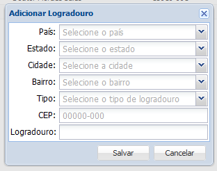

1. Clique no botão Adicionar
2. Abrirá uma nova janela

Selecione a opção desejada nos campos País, Estado, Cidade, Bairro e Tipo (de logradouro), adicione no campo CEP o código posto do logradouro e no campo Logradouro o nome do novo logradouro que deseja adicionar e clique no botão Salvar, caso não queira mais adicionar o novo logradouro clique no botão Cancelar.